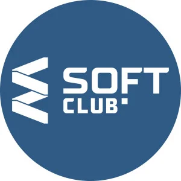

SoftClub

SoftClub markazi omuzishi barnomasozi meboshand
Metanit

Metanit wep sayti baroi omuzishi barnomasozidghae
BMW

Аббревиатура BMW расшифровывается как «Bayerische Motoren Werke GmbH»,
что переводится как «Баварские Моторные Заводы». В этом имени скрывается
отсылка к родине компании — Баварии.Также оно указывает на изначальную
линейку продукции BMW: двигатели для различных задач.